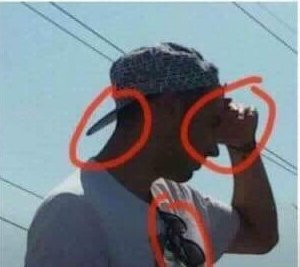

--wu'hsin
"I've come to the realization that the only way to find it is to be it." --Alan Watts
“C’mon enlightenment. Hit me!”
My friend was out jogging and had the thought, “This would be a good time for enlightenment to come, the lightning bolt, the permanent expansive moment.”
No? OK how ‘bout now?
Sadly, there was nothing but crickets from the enlightenment gods.
Which naturally left my friend disappointed, since he’s pretty certain there’s a better state out there and that life would be better if only he could at it. He’s also certain he doesn’t have what he’s seeking.
He’s not alone in that thought, of course. Countless others around the world share those exact same certainties.
After all, there’s been no lightning-bolt, no falling off the bed, no sidewalk opening up, no calm all the time. There's an elusive something which hasn’t been accessed- a peaceful feeling-state, a spaciousness.
When that is accessed at will, full time, they’ll know they’ve arrived.
Which is perhaps why, spending large portions of life hoping to attain access, most seeking folks turn... inward.
Not outward, mind you. Which is, y'know, where lightning lives.
No, inward, in, to themselves. Meditating on the breath of the body, sitting with the feelings of the body, inquiring into the innermost thoughts that come to the body in the chair.
Looking inside that small, porous container.
For the infinite.
As if everything worth having is contained in that little personal box. As if vastness can be locked in the body somewhere, in some closet, some storage center.
Looking inside to transcend the inside. Looking for the not-self, within the self.
One can see this might not be a great strategy.
So perhaps, if someone wanted to experience bigness, they could try something different, and look outside rather than in.
They might look to what isn’t contained.
Because when referring only to the innerness of body, the mind takes ownership, and gets trapped in the thicket of all-encompassing self.
And it becomes too easy to not notice that, if anything is within, it would be that self they are looking to.
The self is contained within the vast, included in it, part of it,
Rather than the other way around.
Which, to be clear, is not to say that infinity isn’t also inside every individual box as well as outside.
Because, after all, infinity. It’s everywhere. It includes everything.
Even the seeker.
It’s just that focusing on the inside of small might cause a person to miss the much vaster container which is supposedly being sought.
Because the mind looking in can’t see outside its own self.
And even though right about here, the mind says, “But I don’t know this! I need to know it, it’s not real till I know...”
still, the infinite includes that too.
Which means it's not particularly relevant what the box thinks, or feels, or knows. It’s not necessary to put the mind aside, or get beyond it, or get it to shut up.
It's not necessary to transcend anything.
Because all of it is already within the without.
This leaves seekers with a whole lot less work to do, a whole lot less not-enoughness, a whole lot less lack of enlightenment.
After all, how much more infinite than infinity can any one person be? How much more vast? How much more spacious? How much more complete than complete?
How much more inside the outside, contained by the uncontained,
can any
one
BE?
Now that's big.
Click here to get your every week.
'I searched for God and found only myself. I searched for myself and found only God'.
~Rumi
There's absolutely nothing you have to do. You are already free."
~ Robert Adams
